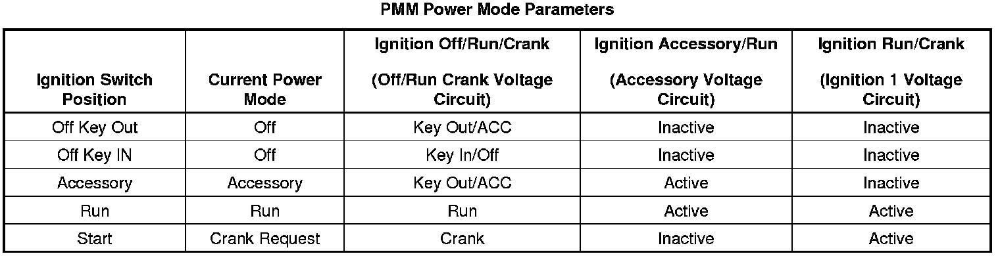

Diagnostic System Check - Vehicle
Diagnostic System Check - Vehicle
1. Verify that none of the following preliminary inspections/tests reveal the cause of the vehicle concern before beginning diagnosis:
* Ensure that the battery is fully charged. Refer to Battery Inspection/Test (Battery Inspection/Test) .
* Ensure that the battery cables are clean and tight.
* Inspect for any open fuses. Refer to Power Distribution Schematics (Power Distribution Diagrams) and Electrical Center Identification Views (Application and ID) .
* Ensure that the grounds are clean, tight, and in the correct location. Refer to Ground Distribution Schematics (Ground Distribution Diagrams) and Harness Routing Views (LHD) (Harness Routing Views (LHD))Harness Routing Views (RHD) (Harness Routing Views (RHD)) .
* Inspect the easily accessible systems or the visible system components for obvious damage or conditions that could cause the concern. This would include checking to ensure that all connections/connectors are fully seated and secured.
* Inspect for aftermarket devices that could affect the operation of the system. Refer to Checking Aftermarket Accessories (Component Tests and General Diagnostics) .
* Search for applicable service bulletins.
• If the preceding inspections/tests resolve the concern, refer to Diagnostic Repair Verification (Verification Tests) .
2. Install a scan tool. Verify that the scan tool powers up.
• If the scan tool does not power up, refer to Scan Tool Does Not Power Up (Scan Tool Does Not Power Up) .
3. Ignition ON, Engine OFF, verify communication with all of the control modules on the vehicle. Refer to Data Link References (Data Link References) for information on the modules you should expect to communicate.
• If the scan tool does not communicate with one or more of the expected control modules, refer to Data Link References (Data Link References) .
4. Verify that the following DTCs are not set: U1814, B1428.
• If either of the DTCs are set, refer to DTC U1814 (U1814) or DTC B1428 (B1428) .
Important: Open the drivers door to ensure retained accessory power mode (RAP) is inactive during this test. The engine may start during this test. Turn the engine OFF as soon as the crank power mode has been observed.
5. With a scan tool, access the Body Control Module Power Mode data display list.
Verify that all the parameters listed in the following table correspond to the ignition key position. The PMM Power Mode parameters table below illustrates the correct state of these parameters (circuits) with the corresponding ignition switch positions. The circuits related to the parameters are in parenthesis.
• If any of the power mode parameters do not match in any ignition switch position, refer to Power Mode Mismatch (Power Mode Mismatch) .
6. Ignition ON, view the security indicator. The security indicator should not remain illuminated after the vehicle bulb check has completed.
• If the security indicator remains illuminated after the bulb check, refer to Diagnostic Trouble Code (DTC) List - Vehicle (Diagnostic Trouble Code Descriptions) and diagnose any of the following theft deterrent DTCs set as current: B1000, B302A, B3031, B3055, B3060, B3935, B3976, P0513, P0633, P1629, P1631, or P1632.
7. Attempt to start the engine. Verify that the engine cranks.
• If the engine does not crank, refer to Symptoms - Engine Electrical (Symptoms - Engine Electrical) .
8. Attempt to start the engine. Verify the engine starts and runs.
• If the engine does not start and run, refer to Engine Cranks but Does Not Run (Engine Cranks But Does Not Run) for the 3.6L (LY7 - Gas, 6 Cylinder, 3.6L, SFI, V6) engine or Engine Cranks but Does Not Run (Engine Cranks But Does Not Run) for the 4.6L (LH2 - Gas, 8 Cylinder, 4.6L, SFI, V8, DOHC, HO) engine.
Important: Do not clear any DTCs unless instructed to do so by a diagnostic procedure.
Important: If any DTCs are Powertrain related DTCs, select Capture Info in order to store the DTC information with the scan tool.
9. Use the appropriate scan tool selections to obtain DTCs from each of the vehicle modules. Verify there are no DTCs reported from any module.
• If any DTCs are present, refer to Diagnostic Trouble Code (DTC) List - Vehicle (Diagnostic Trouble Code Descriptions) and diagnose any current DTCs in the following order:
1. DTCs that begin with a U
2. Any of the following: B1000, B1001, B1008, B1015, B1016, B1019, C0550, C0551, C0561, C0563, C0565, P0601, P0602, P0603, P0604, P0606, P0607, P060D, P062F, P2105, P2107, or P2610
3. Any of the following: B1325, B1327, B1328, B1424, B1441, B1517, C0895, C0899, C0900, P0560, P0562, or P0563
4. Component level DTCs.
5. System level DTCs.
6. Any remaining DTCs.
10. If the customer concern is related to inspection/maintenance (I/M) testing, refer to Inspection/Maintenance (I/M) System Check (Inspection/Maintenance (I/M) System Check) for the 3.6L (LY7 - Gas, 6 Cylinder, 3.6L, SFI, V6) engine or Inspection/Maintenance (I/M) System Check (Inspection/Maintenance (I/M) System Check) for the 4.6L (LH2 - Gas, 8 Cylinder, 4.6L, SFI, V8, DOHC, HO) engine .
• If none of the previous tests or inspections addresses the concern, refer to Symptoms - Vehicle (Symptoms - Vehicle) .
